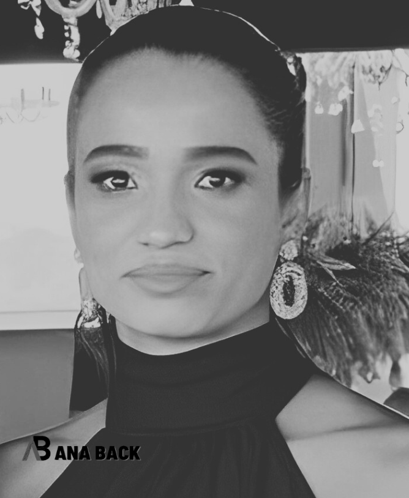

Bem-vindo ao meu portfólio de tecnologia!
Olá, eu sou a Ana.
Meu nome é Ana Paula Back, desenvolvedora Front-End, iniciante.
Na experiência inicial de aprender linguagens e tecnologias.
Sobre
Esse é o meu primeiro portfólio criado apartir dos métodos
que estou estudando
em casa e também aprendendo
na faculdade de Ciência da Computação, (com ênfase em FullStack)
pela faculdade digital
Descomplica, iniciada no 4º semestre de 2022.
Atualmente estou estudando as
tecnologias FrontEnd.
Este portfólio tem 80% do seu projeto
feito por técnicas networking e estudos
em casa,
com a finalidade de mostrar que estou praticando meus primeiros
passos rumo a tecnologia.
Criado com uma interface gráfica simples usando
as tecnologias base da
Web: HTML, CSS e JavaScript.

Projetos
ATENÇÃO!!!
Em desenvolvimento
Em breve novos projetos aqui.